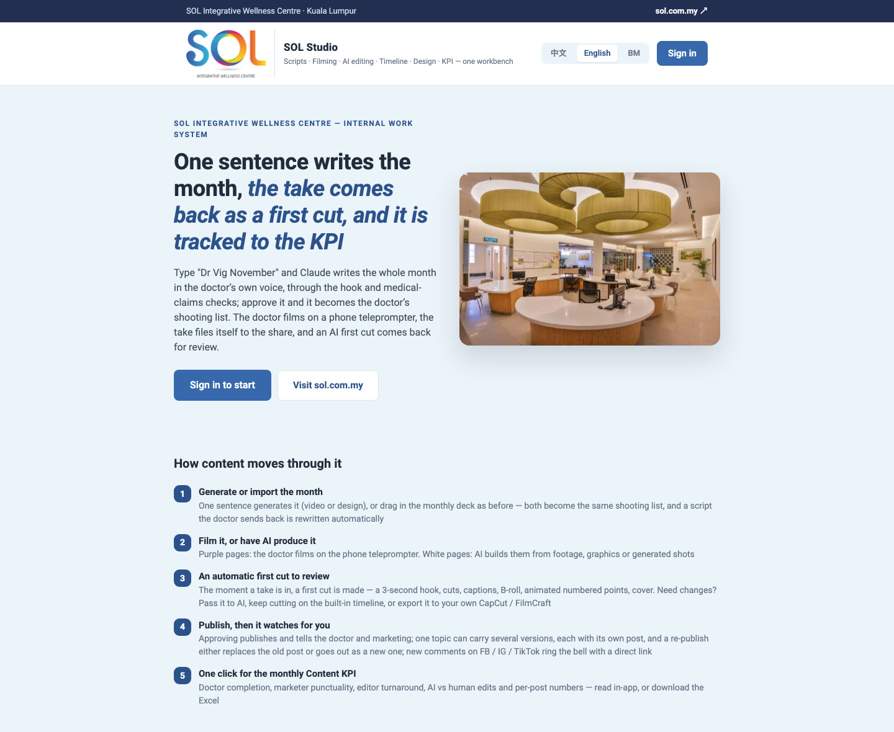
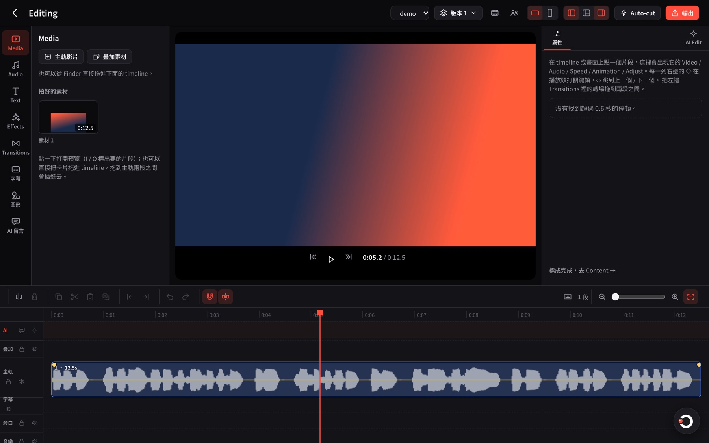
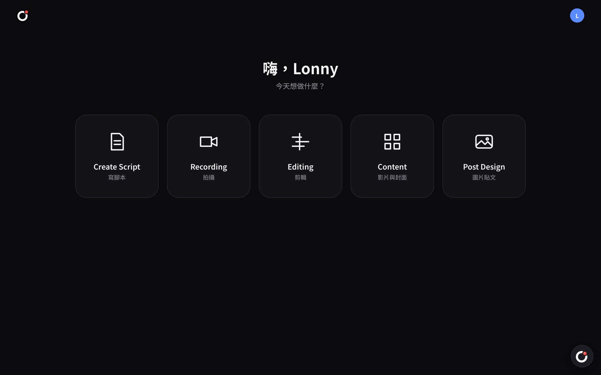
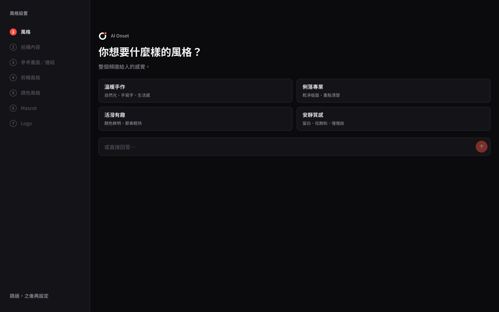
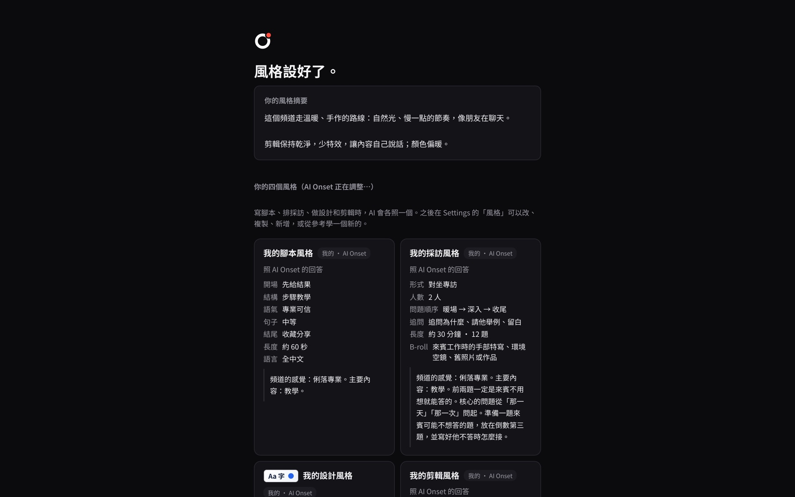
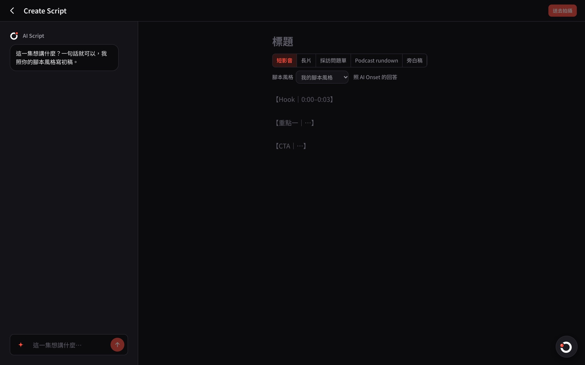
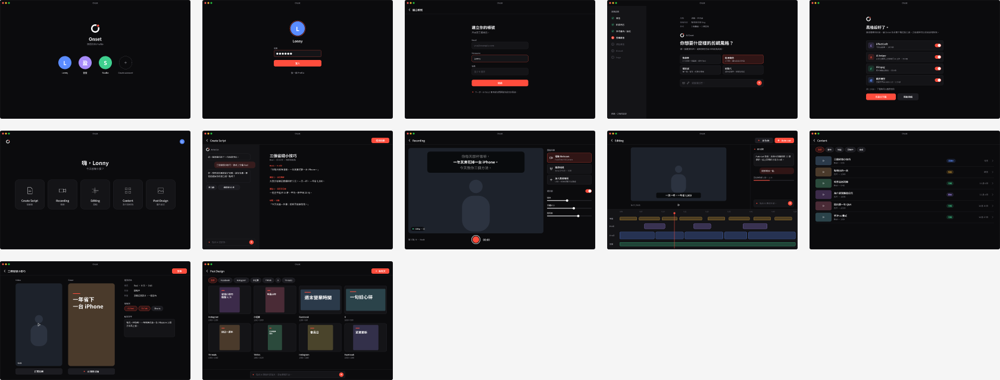

ソフトウェア
2026年より Claude とペア開発。非公開 repo は概要を記載、公開 repo はリンクを掲載。
SOL Studio
PRIVATE2026-08 — 現在 · 約 2,000 commits · 社内で本番稼働中
SOL Integrative Wellness Centre の医師向けコンテンツ制作システム。一言で1か月分の脚本を作成 → 医師がスマホのプロンプターで撮影 → 自動で粗編集 → レビュー → SNS へ予約投稿 → ワンクリックで KPI 出力。技術職以外の全社員が日常的に利用し、UI は中国語・英語・マレー語の3言語対応。
- Create Script：「Dr Vig November」と入力するだけで、AI が医師本人の口調で1か月分を執筆。Hook と医療表現チェック付き。マーケティング部の PPT 月間計画の解析にも対応
- 撮影アプリ（iOS / Android、Expo）：絵コンテカード＋スクロール式プロンプター。撮影後は自動アップロードし共有ドライブへ整理
- AI 自動粗編集：間や撮り直しのカット、Whisper による字幕同期、B-roll の自動割り当て、数値の動的強調、3秒 Hook、サムネイル
- Pass to AI：一言で動画を修正。ジョブは各 Mac 上の AI helper にキューイングして実行。CapCut プロジェクトファイルの書き出しにも対応
- ブラウザ版タイムラインエディタ：マルチトラック、カラーグレーディング、ボーカル分離、背景除去、トランジション、16種の字幕。AI-cut では AI の編集過程をリアルタイムで確認可能
- Podcast マルチカメラ：複数のカメラとマイクを音声で自動同期し、話者を判定して自動でカメラを切替
- Design ボード：FB / IG の画像投稿を AI が執筆。Auto Design でレイヤー編集可能な PSD を一度に3案生成
- 医師の AI ナレーション：社内でクローンした音声でナレーションを作成。電話番号は1桁ずつ読み上げ、英語・マレー語の混在文も原文どおりに発音
- GHL 予約投稿：FB / IG / TikTok / YouTube に対応。コメントを監視し、新着返信があれば通知音でお知らせ
- 3,000本以上の完成動画を収めた素材ライブラリ、Dashboard、Content KPI の Excel レポート、Webinar と顧客リスト
- 権限とプライバシー：ロール／部署単位の権限管理、チャットはメンバー認証のみ、患者同意書は権限保持者のみ閲覧可
- MCP サーバー：Claude などの外部 AI がアプリ内で直接タスク作成・脚本執筆・タイムライン確認を実行可能
Next.jsFastifyPrisma / SQLiteExpo (React Native)FFmpegfaster-whisperClaude API / Claude CLIHeyGenGoHighLevel APIDockerCloudflare TunnelMCP

SOL Studio の公開 landing page（ログイン後が業務システム）。前身は AI-Content-studio（2026-08、MVP：Web で脚本作成 → スマホのプロンプターで撮影 → 自動ポストプロダクション）。
Onset 3.0
PRIVATE2026-11 開始 · ゼロから全面再設計 · 開発中
一般のコンテンツクリエイター向け個人スタジオアプリ。脚本・撮影・編集・サムネイルや投稿画像の制作を一か所で完結。どの画面でも右下から AI（Ask Onset）を呼び出せ、AI の作業を一歩ずつ確認しながらいつでも停止可能。対応予定プラットフォームは macOS、Windows、iOS、Android。
- AI Onset 初期設定：一問一答でチャンネルのスタイルを設定し、脚本／インタビュー／デザイン／編集の4種のスタイルに自動整理（プリセット36種）
- AI Script：ショート動画、長尺動画、インタビュー質問リスト、Podcast rundown、ナレーション原稿の5形式に対応し、そのまま撮影へ
- Recording：PC カメラまたは外部カメラ＋プロンプター。速度とフォントを調整可能
- CapCut 風エディタ：キーフレーム、39種のトランジション、マスク、LUT（HLG / Apple Log / S-Log3 → 709 対応）、速度カーブ、手ぶれ補正
- 字幕：Whisper による音声文字起こし、20種の字幕スタイル、13種のフォント、カラオケ風の逐語ハイライト
- Auto-cut と AI Edit：間や撮り直しを自動カットし、AI がチャプターごとに編集。各ステップをタイムライン上にリアルタイム表示
- オーディオ：ノイズ除去、Demucs によるボーカル／背景分離、AI ナレーション、音楽と効果音、BGM の自動ダッキング
- Podcast マルチカメラと2時間超の長尺動画：自動同期、話者に応じたカメラ切替、チャプター単位の処理
- サムネイルと画像投稿：35種のレイアウト、44種のデザイン操作。FB / IG / 小紅書 / TikTok / X / Threads に対応
- 書き出し：MP4 / MOV / MP3 / WAV。CapCut、FCPXML、Premiere XML、FilmCraft のプロジェクトファイルにも対応
- アニメーションモード：撮影不要。図形、テキストアニメーション、Godot 2D／3D で動画を制作
- MCP：Onset の起動中、外部 AI が直接編集を操作可能
ReactTypeScriptViteNode helperFFmpegWhisperDemucsClaude CLIWebGL / GLSLMCPTauri（計画中）

Editing：左に素材カテゴリ、中央にプレビュー、右にプロパティと AI Edit、下にマルチトラックのタイムライン。

ホーム画面は5つの入口のみ。右下に Ask Onset。

初回利用時：AI Onset が質問を重ねてスタイルを引き出す。

設定完了後、4種のスタイルを自動生成。

Create Script：左で AI と対話、右に脚本。

開発前に作成した macOS 版のデザインカンプ。
vpipe工作台 · vpipe Workbench
PUBLIC · MIT2026-11
Mac 上で MiniMax H3（音声付き動画）と Qwen Image 2.1 Turbo（画像）をローカル実行する小さな Web アプリ。クラウドもクレジットも不要。設定チェックとモデルのワンクリックダウンロード、AI による prompt 最適化、人物 LoRA、キュー処理、2倍アップスケールを搭載。Neural Engine に演算を分担させ、M3 Air で5秒動画の生成時間を約73分から約35分に短縮。
AI Stock Research Desk
PRIVATE2026-10 · 個人用
米国株とマレーシア株（Bursa Malaysia）のリサーチダッシュボード。市場概況、個別銘柄のローソク足とニュース、保有銘柄のシグナル表示と平易な助言、バックテスト、デモ口座、さらに4つの AI アシスタントが毎日作成する繁体字中国語のブリーフィングを搭載。Python + Streamlit、ローカル環境のみで動作。
Web ゲームと小作品（公開中・すぐに遊べます）